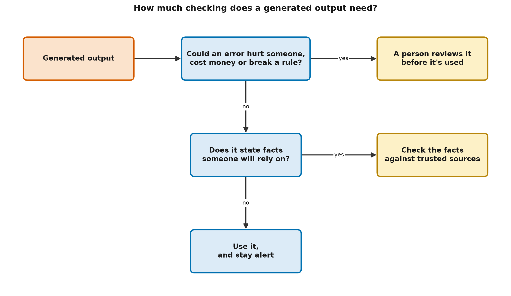

Capabilities, Limits and Responsible Use: A First Look
Learning objectives
By the end you will be able to:
- List tasks generative AI does well and tasks where it is unreliable.
- Explain why fluent output can be false, and why that's hard to eliminate.
- Identify five common failure modes: fabrication, outdated knowledge, inconsistency, bias and overconfidence.
- Apply a two-question rule to decide how much human checking an output needs.
Why this matters
Much of the real-world harm reported from generative AI so far hasn't come from dramatic science-fiction scenarios. It has come from ordinary over-trust: a fabricated citation in a legal filing, a wrong figure in a report, a confident but incorrect answer repeated as fact, confidential data pasted into a service without thinking. Each of these is preventable with a clear picture of where the technology is strong, where it's weak, and how much checking a task deserves.
🟢 Core idea (everyone)
What it does well
Generative AI is strongest when the task is about language and form more than facts, and when a person can quickly judge the result:
| Strong at | Examples |
|---|---|
| Drafting | A first version of an email, a report outline, a cover letter |
| Rewriting | Making text shorter, simpler, more formal or friendlier |
| Summarizing | Pulling the main points from a long document you provide |
| Translating | Between widely used languages, for everyday text |
| Explaining | Rephrasing a concept at different levels, with examples |
| Brainstorming | Lists of ideas, names, questions or counter-arguments |
| Coding help | Drafting, explaining and reviewing code, which you then test |
| Restructuring | Turning notes into a table, or free text into a form |
Where it fails
1. Fabrication. It can state things that are false, with full confidence: invented facts, quotes, statistics, references and links. This is commonly called hallucination. NIST's Generative AI Profile uses the term confabulation instead, and some researchers prefer it because "hallucination" wrongly suggests the system perceives things. The cause is the one you saw in L0-01: the model produces plausible text, and nothing in that process checks it against reality.
2. Outdated knowledge. A model learns from data collected up to a certain date, its training cutoff. It knows nothing after that unless the product gives it newer information, and it may not tell you its knowledge is stale.
3. Inconsistency. Ask the same question twice, or reword it slightly, and you may get a different answer. Generation usually involves random choices, and small changes in wording can steer the output.
4. Bias. Bias, in AI, means systematic unfairness or skew in a system's outputs. Models learn from human-written data, so they can reproduce stereotypes and under-represent some languages, cultures and groups.
5. Overconfidence. Models often don't signal uncertainty reliably. A wrong answer may be stated just as confidently as a right one.
There are also risks in how people use the tools:
- Privacy. Text you paste into an online service may be stored or processed by its provider. Don't paste confidential or personal information into a tool your organization hasn't approved.
- Security. If a model reads untrusted text (a web page, an email), that text can contain instructions that hijack the model's behaviour. This is called prompt injection. L3-11 and Level 6 cover it in depth.
- Over-trust. People tend to accept a computer's output without enough scrutiny, especially when they're busy. This is called automation bias, and it was documented long before generative AI.
An analogy, and where it breaks
Think of generative AI as an extremely well-read, very fast assistant who never says "I'm not sure". They draft brilliantly, but you'd never send their figures to a client unchecked.
Where the analogy breaks down: a human assistant learns from your corrections, knows when they're guessing, and is accountable for their work. A deployed model usually doesn't learn from your corrections in the conversation, can't reliably tell when it's guessing, and can't be held responsible. The accountability stays with you.
A worked example: fluent, and mostly false
This lesson's code trains the toy word generator from L0-01 on seven true statements about Brindlewick, then checks everything it writes against those statements:
| Generated sentence | Checked against the sources |
|---|---|
| the ferry leaves at ten | contradicted: the sources say seven |
| the ferry leaves at seven | supported |
| the library opens at seven | contradicted: the sources say nine |
| the museum opens at eight | contradicted: the sources say ten |
| the ferry leaves at eight | contradicted: the sources say seven |
| the pool closes at nine | contradicted: the sources say eight |
| the market opens at six | unsupported: the sources only say which day it opens |
| the market closes at noon | supported |
All 8 sentences are fluent. Only 2 of the 8 are confirmed by the sources. 5 are contradicted, and 1 can't be checked either way. A large language model does far better than this toy, but the lesson carries over: you can't judge truth by reading for fluency. You have to check against something trustworthy.
How much checking? Two questions

Ask whether an error could cause harm, then whether the output states facts people will rely on; the answers set how much checking is needed.
- Could an error hurt someone, cost money, or break a rule or law? If yes, a person with the right knowledge reviews it before it's used. This is called keeping a human in the loop.
- Otherwise, does it state facts someone will rely on? If yes, check those facts against trusted sources.
- Otherwise (ideas, drafts, rephrasing), use it, and stay alert.
This is a starting point, not a complete risk process. Organizations add their own rules, and Level 6 covers formal frameworks.
🟡 How it works (practitioner)
Checking output against sources
code/fluent_but_false.py does three things. It trains the word-pair generator on the source sentences, generates eight different sentences, and checks each one:
def check(sentence, facts):
key, value = fact_key(sentence) # ("library", "closes", "at"), "six"
if key not in facts:
return "unsupported"
return "supported" if facts[key] == value else f"CONTRADICTED (sources: {key[2]} {facts[key]})"
Run it from this lesson's folder:
python code/fluent_but_false.py
The last lines summarize the result:
Every sentence above is fluent. Checked against the sources:
supported 2
CONTRADICTED 5
unsupported 1
The three verdicts matter in real systems too. Supported means a source says exactly this. Contradicted means a source says something different. Unsupported means no source covers it either way. Unsupported claims are often the most dangerous, because nothing flags them.
Notice how the code decides what counts as "the same question". Each claim is keyed by its subject, verb and preposition, so "the market opens at six" (a time) isn't treated as contradicting "the market opens on saturday" (a day). An earlier draft of this example keyed only on subject and verb, and wrongly reported a contradiction. Deciding when two statements are about the same thing is one of the hardest parts of automated fact-checking.
The general pattern, generate, then verify against trusted sources, is the idea behind grounding: connecting a model's output to specific, checkable sources. Level 3 builds this properly as retrieval-augmented generation (RAG).
A practical checklist
When generated text will be used for anything that matters:
- Check every name, number, date, quote and citation. These are where fabrication concentrates.
- Don't trust references just because they're provided. Models can invent plausible-looking citations and links. Open them and confirm they say what's claimed.
- Give it the source. Asking a model to summarize a document you provide is much more reliable than asking it to recall facts from memory, though still not perfect.
- Ask twice, differently. If two phrasings give different answers, treat both with suspicion.
- Mind what you paste. Follow your organization's rules for confidential and personal data.
- Keep a named person accountable for any output that is published, sent or acted on.
Common pitfalls
- Asking the model whether it's right. It may confirm a wrong answer just as fluently. Self-checking helps a little, but it isn't independent verification.
- Checking only the first few outputs. Errors are intermittent. A tool that was right ten times can be wrong on the eleventh.
- Assuming a disclaimer is enough. "May contain errors" doesn't help a reader who can't tell which part is wrong.
🔴 Going deeper (expert)
Why fabrication is hard to eliminate
Three causes interact:
- The objective. Pretraining rewards text that is probable under the training data, not text that is true (L0-01). Post-training (L2-09) pushes models towards honesty and towards saying "I don't know", which helps substantially but doesn't change the underlying mechanism.
- Calibration. A model is calibrated when its confidence matches its accuracy: when it's "90% sure", it's right about 90% of the time. Research shows models carry some internal signal about whether they know an answer, but that signal is imperfect and isn't always reflected in the text they produce.
- Knowledge limits. Rare facts, recent events and specifics such as page numbers are poorly represented in training data, so the model fills gaps with plausible patterns.
Retrieval (grounding the model in documents) reduces fabrication a great deal, but adds new failure modes: retrieving the wrong document, misreading the right one, or blending sources. Level 3 treats these in detail.
Open question (as of November 2026): whether fabrication can be reduced to negligible levels for open-ended questions, or only managed with verification around the model, is an active research question. Rates vary widely by task, domain and system, and published figures from one setting don't transfer reliably to another.
Risk frameworks in one paragraph
The NIST AI Risk Management Framework (AI RMF 1.0, 2023) organizes AI risk work into four functions: Govern, Map, Measure and Manage. Its Generative AI Profile (NIST AI 600-1, 2024) lists risks specific to generative systems, including confabulation, harmful bias, data privacy, information security and intellectual property. You don't need either framework yet. They show up properly in L6-11, but they're useful to know about now, because many organizations' AI policies are built on them.
Oversight that actually works
"A human in the loop" only helps if the human can catch the error. Studies of automation bias show that people monitoring a mostly reliable system become less vigilant over time. Effective oversight therefore needs:
- Competence: the reviewer can actually judge the output (a pharmacist for medicine guidance).
- Time and incentive: review is a real step, not a rubber stamp.
- Visibility: the output shows its sources, so checking is fast.
- Proportion: heavy review where stakes are high, light review elsewhere, so reviewers don't burn out on trivia.
Level 4 turns these into engineering patterns: approval gates, dry runs and rollback.
Contested areas, flagged honestly
- Intellectual property. Whether training on copyrighted material is lawful, and who owns generated output, are open legal questions that differ between countries. This catalog doesn't give legal advice.
- Environmental cost. Training and running large models uses significant energy and water. Published estimates vary widely with assumptions, so treat any single figure with care.
- Labour and society. Effects on jobs, education and information quality are actively studied and debated. Claims in either direction are often stated with more certainty than the evidence supports.
Common misconceptions
- Myth: If an AI tool cites a source, the claim is verified. Reality: Citations can be fabricated, or real but not supporting the claim. Open them.
- Myth: Newer, bigger models don't hallucinate. Reality: They do so less often on many tasks, but no general-purpose model is free of it.
- Myth: Adding "a human reviews it" makes any use safe. Reality: Only if that person has the knowledge, time and information to catch errors.
- Myth: Responsible use means avoiding generative AI. Reality: It means using it where it helps, and checking in proportion to what's at stake.
Hands-on exercise
Goal: apply the two-question rule to six real-world uses.
Open exercises/who_checks.py, answer the two questions for each use, and
implement decide(). No coding? Answer on paper for each use:
- Ideas for a birthday message to a friend
- A plain-language summary of a medicine leaflet for a patient
- Ferry times for the town's tourism web page
- Name ideas for a new chess club
- A script that deletes old files on a shared server
- A summary of a long report, for your own reading
Solution
The full solution, with reasoning, is in exercises/solutions/who_checks.py:
| Use | Recommendation |
|---|---|
| Birthday message ideas | Use it, and stay alert |
| Medicine leaflet summary | A person reviews it first: errors could hurt someone |
| Ferry times for a web page | Check facts against sources: people will rely on them |
| Chess club names | Use it, and stay alert |
| File-deleting script | A person reviews it first: a mistake can destroy work |
| Report summary for yourself | Check facts against sources before you repeat or act on them |
The last one is the subtle case: "just for me" lowers the stakes, but not the error rate.
Check your understanding
- Why can a language model state something false with complete confidence?
B. Fluency and confidence are properties of the text it was trained to produce, not signals of truth. There's no intent to mislead (A), and the cause has nothing to do with the network connection (C).
- Which of these are common failure modes of generative AI? (choose all that apply)
A, B, D, E, F. These are the five failure modes from this lesson: fabrication (A), inconsistency (B), outdated knowledge (D), overconfidence (E) and bias (F). C is the opposite of the real problem: grammatical fluency is exactly what these models are good at, which is why their errors are easy to miss.
- A tool drafts ferry times for a public web page. Errors would inconvenience people but not endanger them. What does the two-question rule recommend?
B. The answer to question 1 (harm, money, rules) is no, but the output states facts that people will rely on, so the times must be checked against the official timetable. If the times were for an ambulance service, question 1 would be yes, and the answer would become A.
- A colleague says, "We have a human approve every AI-generated report, so we're covered." What questions would you ask about that review?Did your answer cover the main points?
Does the reviewer have the expertise to spot errors in this kind of report? Do they have enough time, or is approval a rubber stamp? Can they see the sources behind each claim, so checking is practical? Automation bias means reviewers of a mostly reliable system tend to stop checking carefully, so the review needs to be designed to work, not just exist.
- Explain it to a colleague: in two or three sentences, explain what "hallucination" is and the single most useful habit for dealing with it.Did your answer cover the main points?
Hallucination is when a generative model produces content that sounds right but is false or made up, such as a fake statistic or a citation that doesn't exist. It happens because the model generates plausible text rather than retrieving verified facts, so it can't simply be switched off: better training and grounding reduce it, but don't remove it. The most useful habit is to check names, numbers, quotes and references against a trusted source before relying on them.
Key terms
Further reading
- 🟢 Artificial Intelligence Risk Management Framework: Generative Artificial Intelligence Profile (NIST AI 600-1) — NIST (2024). Plain-language descriptions of the risks specific to generative AI, including confabulation. https://doi.org/10.6028/NIST.AI.600-1
- 🟡 Artificial Intelligence Risk Management Framework (AI RMF 1.0) — NIST (2023). The Govern, Map, Measure and Manage functions that many organizations' AI policies build on. https://doi.org/10.6028/NIST.AI.100-1
- 🟡 Complacency and Bias in Human Use of Automation: An Attentional Integration — R. Parasuraman and D. H. Manzey (2010). Human Factors, 52(3). A review of why people over-trust automated systems.
- 🔴 Survey of Hallucination in Natural Language Generation — Ji et al. (2023). ACM Computing Surveys. Definitions, causes and measurement of hallucination. https://arxiv.org/abs/2202.03629
- 🔴 Language Models (Mostly) Know What They Know — Kadavath et al. (2022). Evidence on calibration and self-evaluation in language models. https://arxiv.org/abs/2207.05221
Next
- Next lesson: L0-05 How to Use This Catalog
- Related: L2-11 explains hallucination mechanically. L3-08 to L3-11 build grounding and defend against prompt injection. Level 6 covers security, fairness and governance in depth.